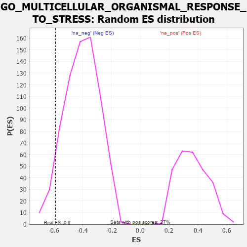

| | | Dataset | 7d |
| Phenotype | NoPhenotypeAvailable |
| Upregulated in class | na_neg |
| GeneSet | GO_MULTICELLULAR_ORGANISMAL_RESPONSE_TO_STRESS |
| Enrichment Score (ES) | -0.5894539 |
| Normalized Enrichment Score (NES) | -1.4501942 |
| Nominal p-value | 0.06139154 |
| FDR q-value | 0.24422814 |
| FWER p-Value | 1.0 |
Table: GSEA Results Summary
 Fig 1: Enrichment plot: GO_MULTICELLULAR_ORGANISMAL_RESPONSE_TO_STRESS
Fig 1: Enrichment plot: GO_MULTICELLULAR_ORGANISMAL_RESPONSE_TO_STRESS
Profile of the Running ES Score & Positions of GeneSet Members on the Rank Ordered List
| PROBE | GENE SYMBOL | GENE_TITLE | RANK IN GENE LIST | RANK METRIC SCORE | RUNNING ES | CORE ENRICHMENT | | 1 | MEF2C | | | 1054 | 0.473 | -0.0902 | No |
| 2 | NR2E1 | | | 2844 | 0.177 | -0.2993 | No |
| 3 | GCH1 | | | 3166 | 0.127 | -0.3282 | No |
| 4 | LRP11 | | | 4250 | -0.050 | -0.4599 | No |
| 5 | NMUR2 | | | 4646 | -0.127 | -0.4982 | No |
| 6 | P2RX4 | | | 4813 | -0.161 | -0.5046 | No |
| 7 | PTEN | | | 5262 | -0.261 | -0.5376 | No |
| 8 | NPY2R | | | 5331 | -0.281 | -0.5211 | No |
| 9 | ASIC4 | | | 5876 | -0.427 | -0.5513 | Yes |
| 10 | SCN9A | | | 6146 | -0.518 | -0.5388 | Yes |
| 11 | RAG1 | | | 6176 | -0.530 | -0.4950 | Yes |
| 12 | DPP4 | | | 6501 | -0.663 | -0.4765 | Yes |
| 13 | TSPO | | | 7194 | -1.065 | -0.4682 | Yes |
| 14 | VDAC1 | | | 7512 | -1.409 | -0.3822 | Yes |
| 15 | GRIK2 | | | 7552 | -1.471 | -0.2556 | Yes |
| 16 | TRPA1 | | | 7625 | -1.608 | -0.1209 | Yes |
| 17 | ASIC1 | | | 7726 | -1.838 | 0.0308 | Yes |
Table: GSEA details [plain text format]

Fig 2: GO_MULTICELLULAR_ORGANISMAL_RESPONSE_TO_STRESS: Random ES distribution
Gene set null distribution of ES for GO_MULTICELLULAR_ORGANISMAL_RESPONSE_TO_STRESS